Bright mathematical wizardry directions. Pick one and we can make it the desktop icon and browser tab favicon.
Bright
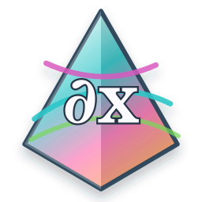
A. Wizard Prism A neon prism, orbital calculus marks, and a glowing derivative glyph.B. Arcane Cauldron A bright formula cauldron bubbling with π, ∂, and x sparks.
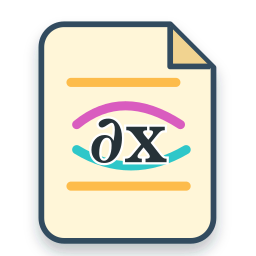
C. Cosmic Scroll A parchment spell-card over a cosmic gradient, more scholarly but still vivid.D. Stellar Sigil A magical sigil/portal with a clean central ∂x mark for small sizes.
Three-quarter
A Three-quarter. Wizard Prism Near-neon prism wizardry, softened one step from the brightest row.B Three-quarter. Arcane Cauldron Still punchy and magical, but a little less midnight-electric.C Three-quarter. Cosmic Scroll Scholarly spell-card colour with most of the original glow retained.D Three-quarter. Stellar Sigil The bright sigil dialed down slightly while keeping crisp contrast.
Halfway
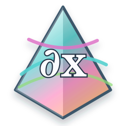
A Halfway. Wizard Prism The same prism spell, lighter than neon but still saturated enough to glow.B Halfway. Arcane Cauldron A gentler formula cauldron with more punch than the pastel version.C Halfway. Cosmic Scroll The scholarly spell-card direction with airy but richer cosmic colours.
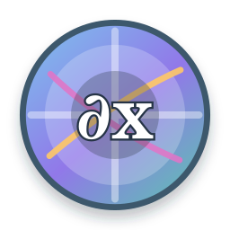
D Halfway. Stellar Sigil The sigil/portal idea in a clear palette that still has magical contrast.
Light
A Light. Wizard Prism The same prism spell, softened into bright pastel glass and sky colours.
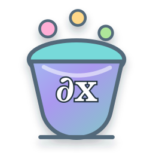
B Light. Arcane Cauldron A gentler formula cauldron with candy-coloured sparks and a lighter pot.
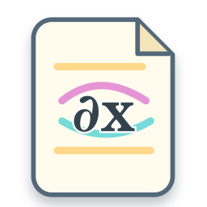
C Light. Cosmic Scroll The scholarly spell-card direction with airy pastel cosmic colours.
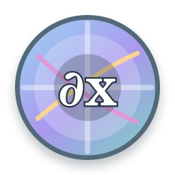
D Light. Stellar Sigil The sigil/portal idea in a clearer daytime palette for softer desktops.
Bright Bolder
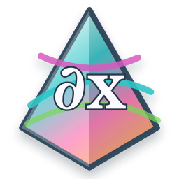
A Bright Bolder. Wizard Prism The original neon prism with heavier geometry and a stronger ∂x mark.B Bright Bolder. Arcane Cauldron A darker cauldron rim and outlined expr text for better small-size reading.C Bright Bolder. Cosmic Scroll The spell-card gains a darker parchment edge and stronger mathematical lettering.
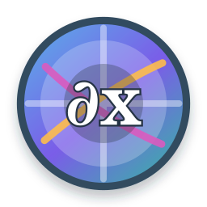
D Bright Bolder. Stellar Sigil A heavier portal/sigil with a larger, more legible central ∂x.
Three-quarter Bolder
A Three-quarter Bolder. Wizard Prism The softened prism palette, but with the stronger edges and text retained.B Three-quarter Bolder. Arcane Cauldron Less midnight-electric, while preserving the heavier readable expr mark.C Three-quarter Bolder. Cosmic Scroll A softer cosmic card with the darker outline treatment kept.D Three-quarter Bolder. Stellar Sigil The dialed-down sigil with a central glyph that still reads clearly.
Halfway Bolder
A Halfway Bolder. Wizard Prism Halfway colour with stronger prism boundaries and clearer ∂x text.
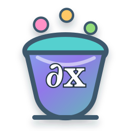
B Halfway Bolder. Arcane Cauldron Gentler colour, sturdier pot shape, and more readable expr lettering.C Halfway Bolder. Cosmic Scroll Airier colour with added ink weight for the scroll and formula marks.
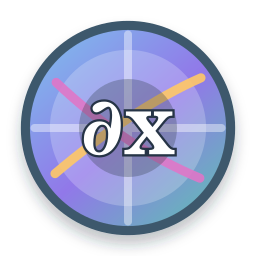
D Halfway Bolder. Stellar Sigil Clearer portal rings and central glyph in the mid palette.
Light Bolder
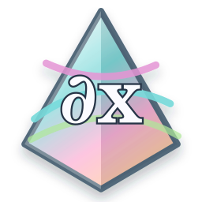
A Light Bolder. Wizard Prism Pastel glass colours with darker prism edges and stronger text.
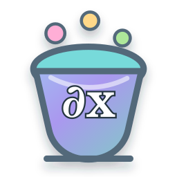
B Light Bolder. Arcane Cauldron Candy colours, but with a firmer cauldron outline and legible expr mark.
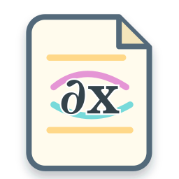
C Light Bolder. Cosmic Scroll The daytime spell-card with more ink around the important shapes.
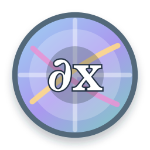
D Light Bolder. Stellar Sigil A softer sigil with heavier linework for readability.